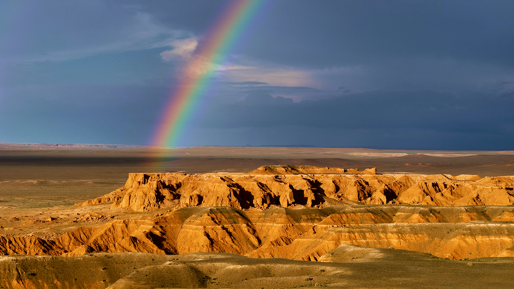
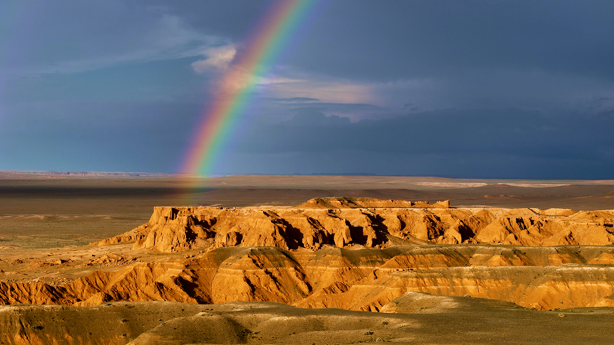

Gateway to Prehistory
02
The Flaming Cliffs gained global fame in the 1920s when paleontologist Roy Chapman Andrews unearthed the first dinosaur eggs here. This discovery redefined our understanding of prehistoric life and placed the Flaming Cliffs firmly on the map of world heritage.
Every visitor who steps foot here walks in the footsteps of history, experiencing the thrill of standing where groundbreaking discoveries were made. As you explore the cliffs, you’ll uncover layers of geological and cultural significance that make this place truly unique.
Learn more →